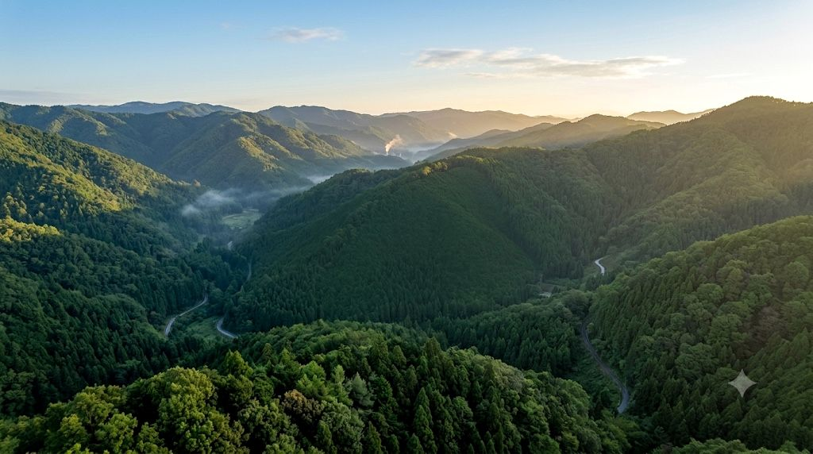
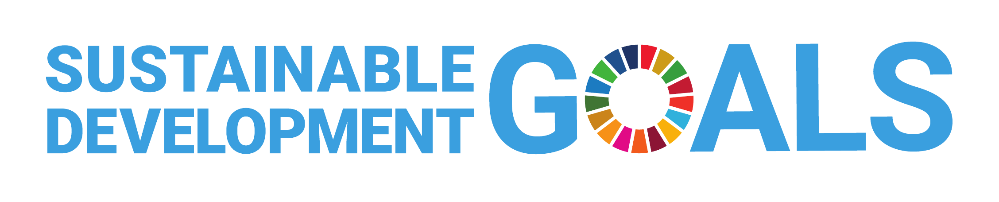
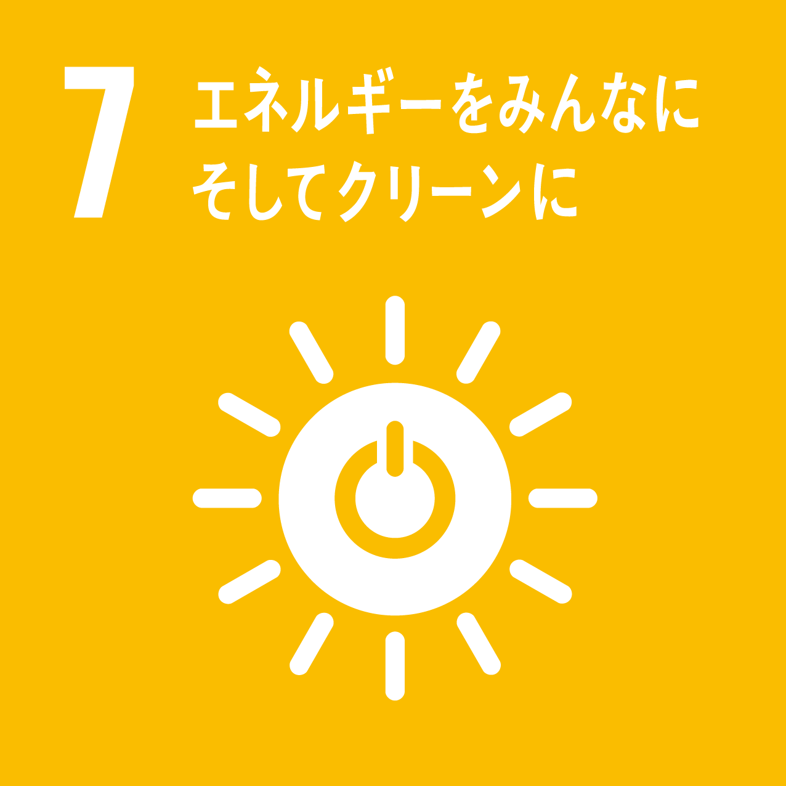
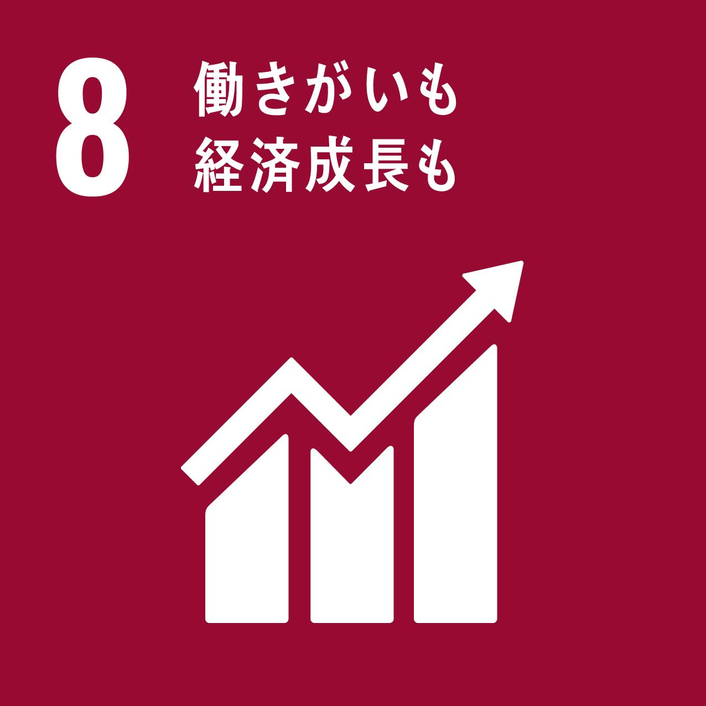
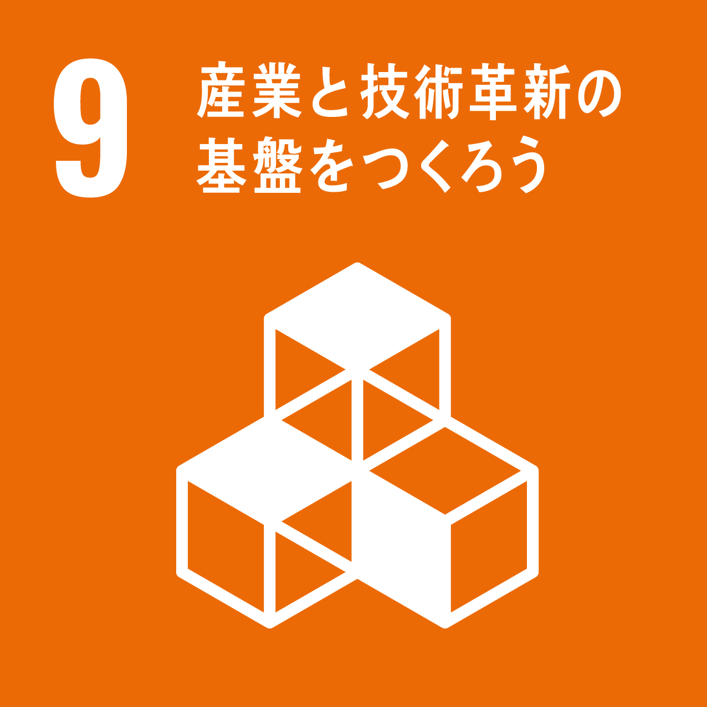
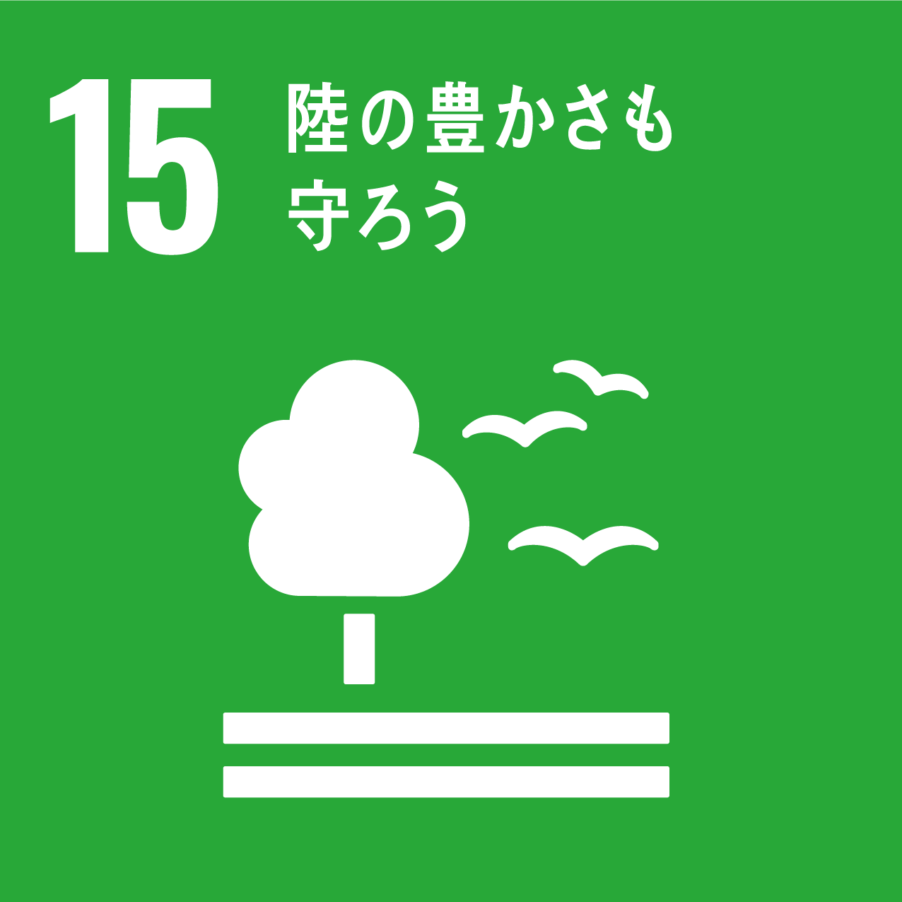

01
森林整備・危険木伐採
森林を健全に保ち、地域の安全と木材資源の活用につなげます。
 株式会社ClearthForest Resource Company
株式会社ClearthForest Resource Company

CLEARTH FOREST STORY
森林から未来へ。森林資源を循環させ、
持続可能な社会の実現へ。
株式会社Clearthは、森林整備から木質チップ製造、バイオマス発電用燃料の供給までを一貫して行っています。
森林資源を無駄なく循環させ、地域・環境・未来へつなぐ「サーキュラーバイオエコノミー」の考え方を大切にし、森林資源を有効活用することで持続可能な社会の実現に取り組んでいます。
FOREST RESOURCE CYCLE
森を整え、木を運び、資源へ変え、木質バイオマス燃料として発電所へ届ける。その一連の流れをつなぐことが、Clearthの事業です。
事業のすべてが、次の森林づくりにつながっています。
森林を健全に保ち、地域の安全と木材資源の活用につなげます。
伐採した木材を重機と車両で安全に搬出し、次の工程へ運びます。
木材を破砕・選別し、エネルギーに活用できる木質チップへ加工します。
供給した木質チップが、発電所で再生可能エネルギーへ変わります。
木質バイオマス燃料を発電所へ供給し、再生可能エネルギーの普及を支えます。
適切な管理と循環利用によって、健全な森林を未来へつなぎます。
危険木への対応と適切な森林整備で、暮らしの安全を守ります。
十分に活用されていなかった木材を、価値ある燃料へ変えます。
木質バイオマス燃料の供給を通じて、エネルギー転換を支えます。
CIRCULAR BIOECONOMY
サーキュラーバイオエコノミーとは、生物資源を持続可能に活用し、資源を循環させながら環境・地域・経済の調和を目指す考え方です。
株式会社Clearthは、森林整備から木質チップ製造、バイオマス発電用燃料の供給までを一貫して行い、森林資源を有効活用することで循環型社会の実現に取り組んでいます。
環境を守ることと、地域の産業を支えることを、ひとつの循環として考えます。
森林保全・CO₂排出削減
暮らしの安全・エネルギー
資源価値・地域産業
SUSTAINABILITY
森林資源を循環させる日々の事業を通じて、環境負荷の低減と健全な森林づくりに貢献します。
木質バイオマスを活用し、再生可能エネルギーの普及に貢献しています。
適切な森林整備を行い、災害防止や健全な森林づくりに取り組んでいます。
これまで十分に活用されていなかった木材も資源として活用し、循環型社会の実現に貢献しています。

SDGs
Clearthは、森林資源を循環させる事業そのものを通じて、特に関わりの深い9つの目標へ継続的に貢献します。

木質バイオマス燃料の供給により、再生可能エネルギーを支えます。

地域林業・雇用・経済活動への貢献を目指します。

森林資源を活用する循環型産業の発展を支えます。

危険木伐採・森林整備を通じて、安全な地域づくりに貢献します。

木材資源を無駄なく循環利用します。

森林整備と木質バイオマス利用により、気候変動対策へ貢献します。

水源保全や土砂流出抑制を通じ、河川・海洋環境の保全に間接的に貢献します。

森林保全と生物多様性の維持に取り組みます。

行政・山林所有者・発電所・地域企業との連携を推進します。
株式会社Clearthは持続可能な開発目標（SDGs）を支援しています。事業活動を通じて、地域・環境・経済が調和する持続可能な未来を目指します。
ロゴ・アイコン出典：国連広報センター「SDGsのポスター・ロゴ・アイコンおよびガイドライン」 ／ 国際連合 Sustainable Development Goals
本ページの内容は国際連合の承認を受けたものではなく、国際連合またはその職員、加盟国の見解を反映するものではありません。
FOR OUR COMMUNITY
株式会社Clearthは森林整備を通じて、地域とともに持続可能な未来づくりを目指しています。